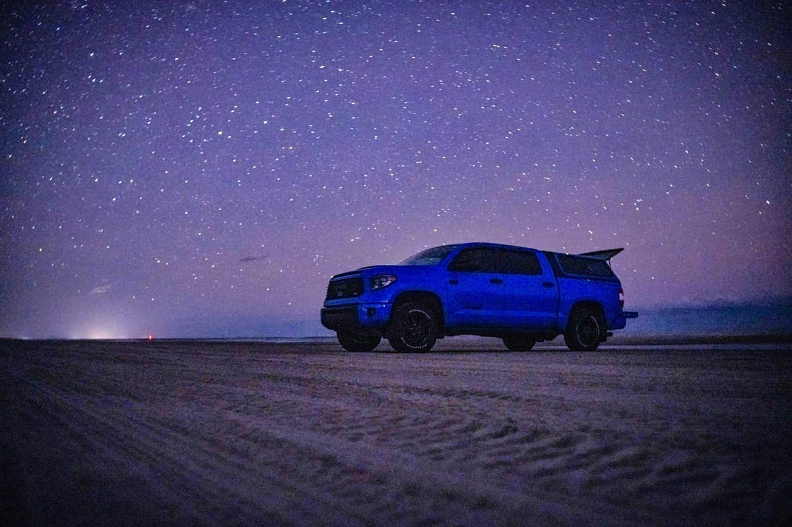
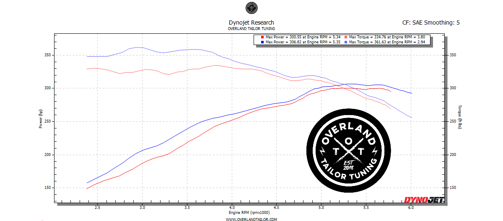

Here's a real Dynojet pull on the 5.7L V8 Tundra — stock versus the naturally-aspirated OTT calibration. Peak horsepower barely moves (~301 → ~307 whp), and that's the point: the OTT tune is drivability-first. It adds about 27 lb-ft of peak torque (~335 → ~362 lb-ft) and brings it on roughly 860 rpm earlier, filling the midrange where the truck actually drives, tows, and crawls.

Supported Tundra platforms can run a supercharger or factory-turbo performance calibration for the biggest gains, Tuned Yota is an authorized Magnuson retailer, installer, servicer, and calibrator, and also supports Harrop and ProCharger. Want the big number? On a Magnuson Stage 1, supported 5.7L V8 Tundras put down ~450 whp — see the dyno on our Magnuson supercharger guide.
To book your Tundra calibration, call or text (612) 406-7117, or use Find Your Exact Tune to send a request tied to your nearest event market across the Upper Midwest (MN, IA, WI, ND, SD, NE). Your regional installer confirms platform, model year, engine, tire size, modifications, event availability, and final calibration support.
Find Your Exact Tune →An OTT Tune is a custom Toyota Tundra calibration focused on real-world drivability, throttle response, shift behavior, reduced gear hunting, larger-tire drivability, towing confidence, and overland-ready response, and more usable power where supported. Every tune is built by a licensed VFTuner PRO Tuner.
On supported Tundra platforms, yes, calibration can improve shift behavior and reduce gear hunting, which is common after larger tires, added weight, towing, or hilly driving.
Yes. Lifts, armor, racks, and recovery gear make your Tundra feel heavier and lazier; the calibration is designed to restore drivability and response, where supported.
Supported Tundra configurations: All years 4.0L V6, All years 4.7L V8, All years 4.6L V8, 2007-2021 5.7L V8. Use Find Your Exact Tune to confirm your exact year and engine.
Tundra calibrations start at $500. Your exact price depends on year, engine, and setup, Find Your Exact Tune shows it instantly.
Yes, on supported Tundra platforms. Tuned Yota is an authorized Magnuson Supercharger retailer, installer, servicer, and calibrator, and also supports Harrop and ProCharger systems; factory-turbo platforms receive a dedicated turbo performance calibration.
Your factory emissions systems stay fully intact, and every calibration is verified with a 5-gas analyzer during drive-cycle testing, EPA-compliant in every state. We never disable check-engine lights, and we do not tune off-road-only vehicles.
Prices are suggested starting prices; final fitment and quote are confirmed at booking. Supported years, engines, and features vary by platform. All vehicles must retain fully intact, federally compliant emissions systems.